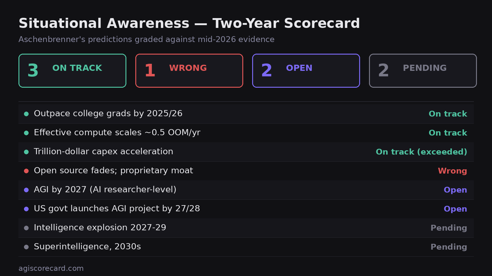

Situational Awareness: A Two-Year Scorecard

Quick answers
Was Aschenbrenner right about AGI? Two years in (mid-2026): 3 predictions on track, 1 clearly wrong, 2 open, 2 too early to grade. His headline AGI-by-2027 claim resolves by January 2028.
What did he get wrong? His clearest miss is "open source fades, proprietary moat holds." Open-weight models (DeepSeek V4, Qwen 3.7 Max) are ~3–6 months behind the frontier at a fraction of the cost — the opposite of fading.
What did he get right? Compute scaling (~0.5 OOM/yr), the capex explosion (exceeded his projections), and models reaching college-graduate level on knowledge work (~83% GDPval).
Is AGI 2027 still possible? Open. Agentic coding is strong (~80% SWE-Bench Pro), but autonomous AI research is undemonstrated. His 2027 is more aggressive than Hassabis (~50% by 2030), Metaculus (2033), or academic surveys (2047).
62.5 This whole retrospective in one number: AGI-2027 Thesis TrackerAn auditable 0–100 score, with a live history and pre-registered flip conditions →Why another retrospective
Two excellent evaluations already exist: Nathan Delisle's one-year quantitative audit (June 2025), which checked the OOM math driver-by-driver, and Jamie Harris's two-year evaluation on the EA Forum (March 2026), which covered the full breadth of claims.
Both are point-in-time snapshots. This analysis adds three things: (1) a verdict-level scorecard at the exact two-year mark (the essay was published June 2024), (2) explicit, pre-registered criteria for what would change each verdict, and (3) calibration context — where Aschenbrenner's timeline sits relative to other public forecasters.
Grading framework
- On track — evidence to date is consistent with the prediction's trajectory
- Wrong — evidence to date contradicts the prediction as stated
- Open — the deadline hasn't arrived and evidence is genuinely mixed
- Pending — too early for evidence to bear on it at all
A note on charity: where the essay's claim is ambiguous, we grade the reading a careful 2024 reader would have taken away, not the most defensible retreat available in hindsight. This choice does real work in the one "Wrong" verdict, flagged below.
The scorecard (June 2026)
| Prediction | Evidence as of mid-2026 | Verdict |
|---|---|---|
| Models outpace college graduates by 2025/26 | ~83% on knowledge-work benchmarks (GPT-5.4, GDPval); ~80% SWE-Bench Pro (Claude Fable 5); agents in production | On track |
| Effective compute scales ~0.5 OOM/yr ×2 | Delisle's audit: pace "roughly supported," launches scattered ±0.5 OOM around trend | On track |
| Capex acceleration toward trillion-dollar scale | Investment running ahead of projections — his most clearly vindicated claim | Exceeded |
| Open source fades; proprietary US moat | DeepSeek V4 / Qwen 3.7 Max at ~3–6 months behind frontier, fraction of the price, real architectural innovation | Wrong |
| AGI by 2027 (AI-researcher level) | Agentic coding strong; autonomous end-to-end research undemonstrated; 18 months left | Open |
| US govt launches AGI project by 27/28 | National-security involvement growing; no formal Project; deadline not elapsed | Open |
| Intelligence explosion 2027–29 | — | Pending |
| Superintelligence, 2030s | — | Pending |
Two claims we're deliberately not grading as wins despite favorable headlines: AI revenue (tracking meaningfully behind his ~$100B-run-rate sketch — Harris's March 2026 evaluation put the most generous figure at ~$60B, while spring-2026 lab reporting has OpenAI at ~$25B+ and Anthropic at ~$19–20B annualized; behind on any accounting) and the "shocking qualitative leap" framing (benchmarks were met, but the felt discontinuity hasn't landed as described). Both cut against grade inflation in his favor.
The one clear miss, and why it matters more than it looks
The open-source verdict is the one we expect the most pushback on, so here is the reasoning in full.
The essay's geopolitical architecture rests on a specific premise: algorithmic secrets and model weights are the crown jewels; whoever locks them down converts compute concentration into durable national advantage. "Lock Down the Labs" is a third of the essay's policy program.
What happened instead: capable AI diffused. DeepSeek shipped genuine architectural advances (Epoch characterizes MLA and fine-grained MoE as real innovations, not just distillation), open-weight models compressed the frontier gap to months, and pricing collapsed. Distillation allegations are credible and muddy the attribution — but they strengthen rather than rescue the original claim, because a world where frontier capability can be cheaply distilled is precisely a world where the proprietary moat doesn't hold.
The downstream implication: if intelligence is cheap and diffuse, compute concentration buys less geopolitical advantage than the essay's model assumes, and the arms-race logic that motivates The Project weakens.
The steelman against this grade: Aschenbrenner's claim could be read narrowly — that the very frontier stays proprietary, which remains true. We grade against the broader reading because the essay's policy conclusions depend on the broader version. If you think that's miscalibrated, that's exactly the argument we want to have.
Calibration context: his 2027 vs everyone else
| Forecaster | AGI timeline | Note |
|---|---|---|
| Elon Musk (xAI) | By end of 2026 | Most aggressive public claim |
| Leopold Aschenbrenner | 2027 "strikingly plausible" | The subject of this scorecard |
| Demis Hassabis (DeepMind) | ~50% by 2030 | Cautious lab leader |
| Samotsvety | ~28% by 2030 | Strongest forecasting track record |
| Metaculus community | 25% by 2029 · 50% by 2033 | Feb 2026, ~2,000 forecasters |
| Andrej Karpathy | ~A decade out | Architecture skeptic |
| AI researcher survey (n=2,778) | 50% by 2047 | Academic median |
Definitions vary enough that this is approximate. The meta-observation: expert medians have compressed from roughly 2060 to roughly 2033 in six years. Aschenbrenner sits well inside the aggressive tail — but the whole distribution has been moving toward him.
Pre-registered: what would flip each verdict
- "Outpace college grads" → Wrong if by end-2026 frontier models still cannot complete a majority of representative entry-level knowledge-work tasks end-to-end without human cleanup (the "drop-in coworker" bar, not the benchmark bar).
- "Scaling continues" → Wrong if the next frontier generation lands >1 OOM below trendline or a major lab publicly abandons the scaling thesis.
- "Open source fades" → back to Open if export controls or compute costs push the open-weight gap back beyond ~18 months for two consecutive frontier generations, or if current open-weight performance is shown to be substantially distillation-driven and distillation gets durably blocked.
- "AGI 2027" → resolves January 1, 2028 at the latest; graded Wrong if no system has demonstrably automated a meaningful fraction of AI research engineering by then, with "meaningful" operationalized before the deadline.
Known weaknesses of this exercise
Verdict-level grading compresses real uncertainty; reasonable people can draw the On-track/Open line differently. The evidence base is public reporting and the two prior evaluations, not lab-internal data. And there's an unavoidable selection effect: the predictions easiest to grade are the most concrete ones, which biases any scorecard toward quantitative claims and away from the strategic ones that may matter more.
The live scorecard updates as models ship and verdicts change.
View the live scorecard →Be first to know when a verdict flips
One email when one of the eight verdicts changes and the AGI-2027 Thesis Tracker moves — the single auditable score no other tracker has. Not a weekly newsletter; nothing arrives until the score actually moves.
Subscribe free →Disclosure on process: research and drafting were substantially assisted by Claude, including the evidence-gathering behind each verdict. The framing, source review, and responsibility for the grades as published rest with the site's maintainer — if one is wrong, it gets changed, with a changelog.